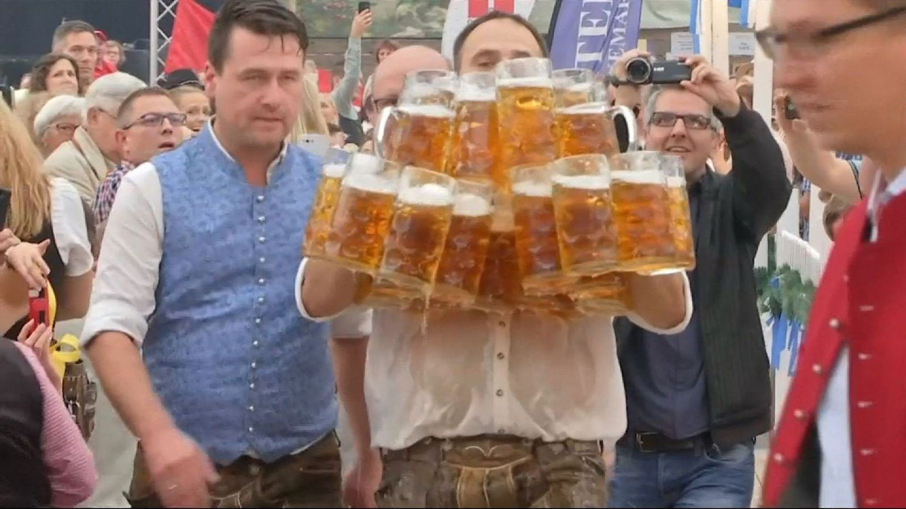
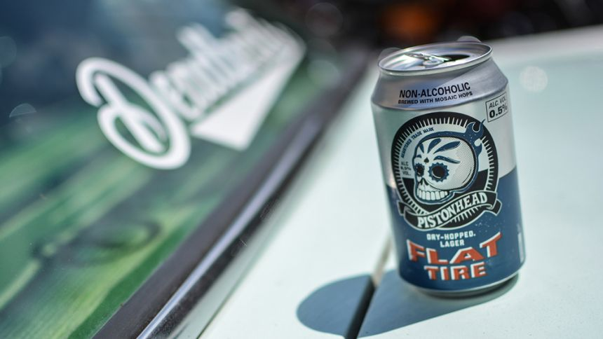
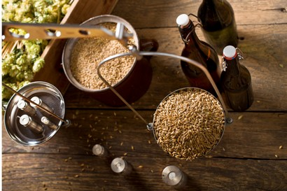
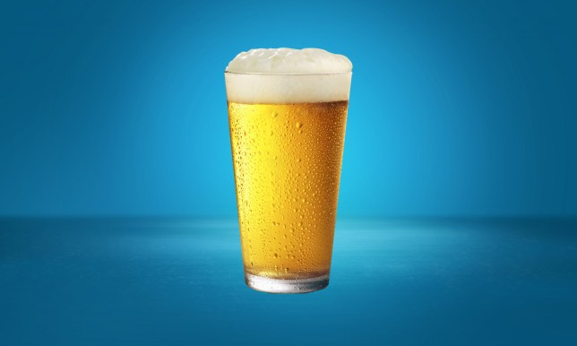
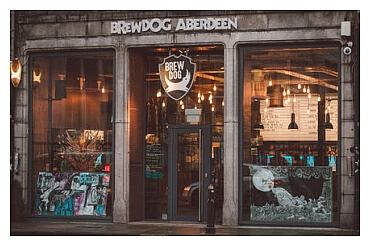
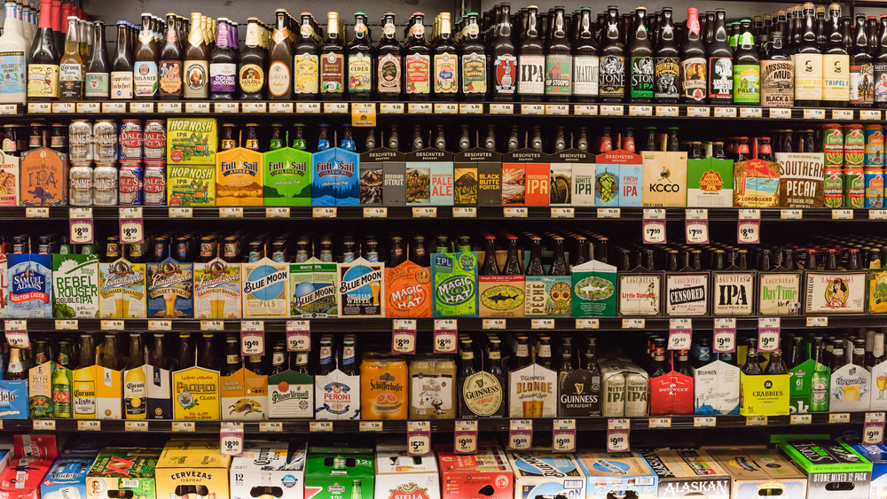

Pints 101
The cheapest place in Britain to get a round of pints

Figures show the average price of a pint of beer has risen to £3.79 but there are wide variations between different areas.
The average price of a pint of beer in Britain has risen by a "substantial" 10p to £3.79 over the last year, according to an annual survey by The Good Pub Guide.
It also revealed big regional differences in the typical cost of a pint, ranging from £4.57 in London down to £3.46 in Shropshire.
The 2.7% increase in the national average is higher than the latest CPI inflation figure of 2%, but lower than the rate of regular pay growth, which was most recently reported at 3.9%.
The Best Non-Alcoholic Beer
Have you ever tallied up the number of units of alcohol you drink in a week? We don’t mean bluffed a rough guess after the fact, but logged each and every drink as you poured them? We did once, using the excellent Drinkaware app, and it was an eye-opening exercise.
How to Make Real Beer
Have you ever wondered how to make real beer? It sounds intimidating, but the truth is it’s easy, great fun and will end up saving you money.
What the Perfect Pint Should Look Like
What has a head of exactly nine millimetres and should be enjoyed after classes are over with your mates?
A pint, obviously.
Wetherspoons slashes price of pint of beer in bid to demonstrate benefits of Brexit
Wetherspoons has slashed the price of a pint of beer in a bid to demonstrate the benefits of Brexit. The pub chain, run by Brexiteer Tim Martin, has cut the cost for a pint of Ruddles ale by an average of 20p across almost all of its 1,000 watering holes.
10 of the best bars to visit when in Aberdeen
Whether you're after groundbreaking new flavours, stylish surroundings or homey comfort, Aberdeen's bars can provide all of that and more.
If you want to find the ideal bar for your visit to the Granite City, just take a look at our hand-picked favourites
Supermarket Beer Guide
Most of us shop in supermarkets some or all of the time and there’s no denying that at their best they offer a solid variety of beer at very reasonable prices. Here’s our guide to ferreting out the best supermarket beer.